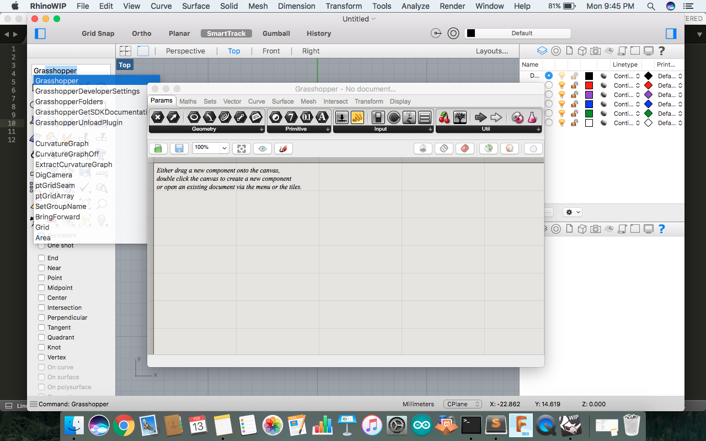
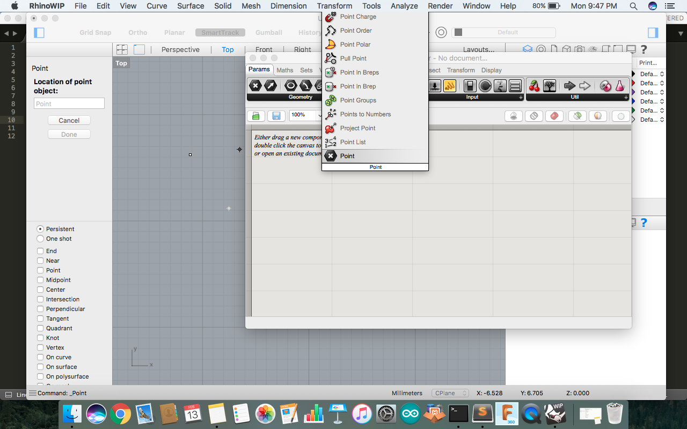
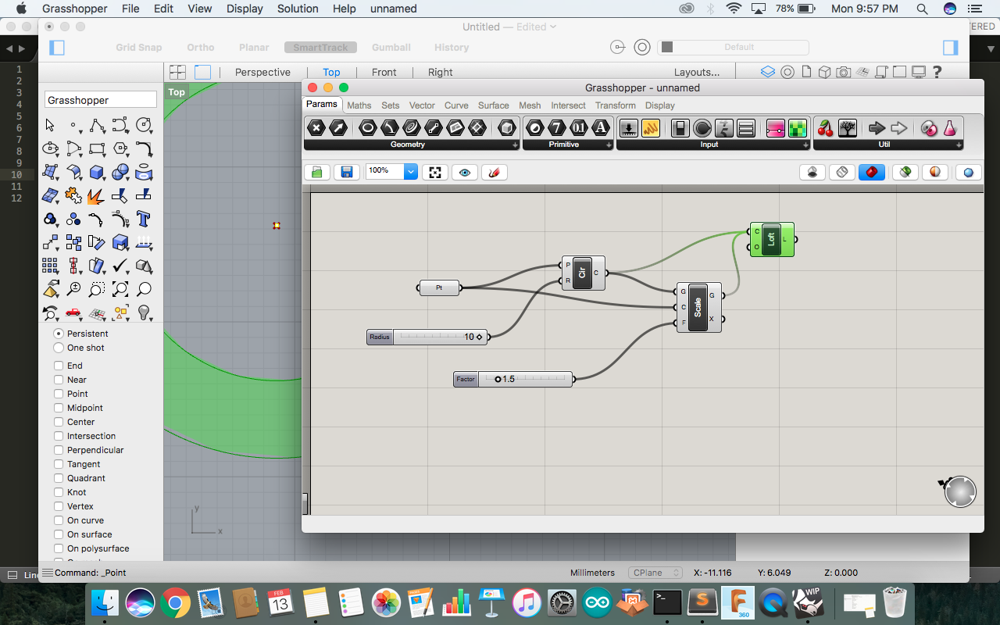
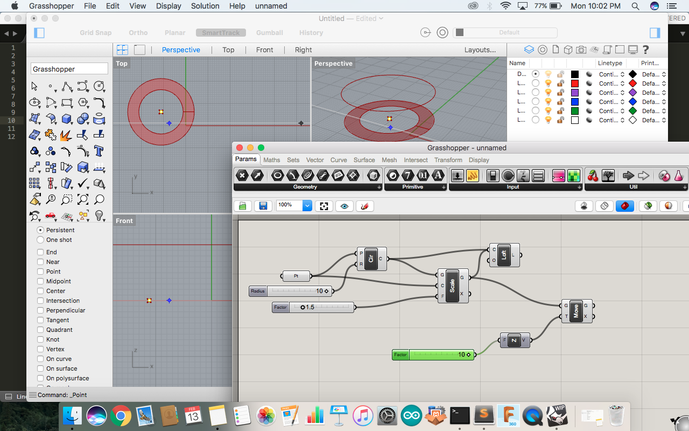
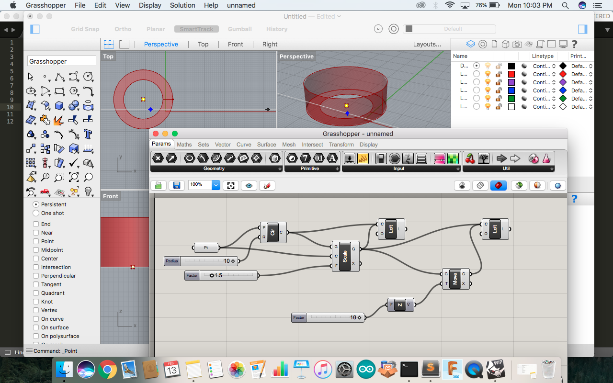
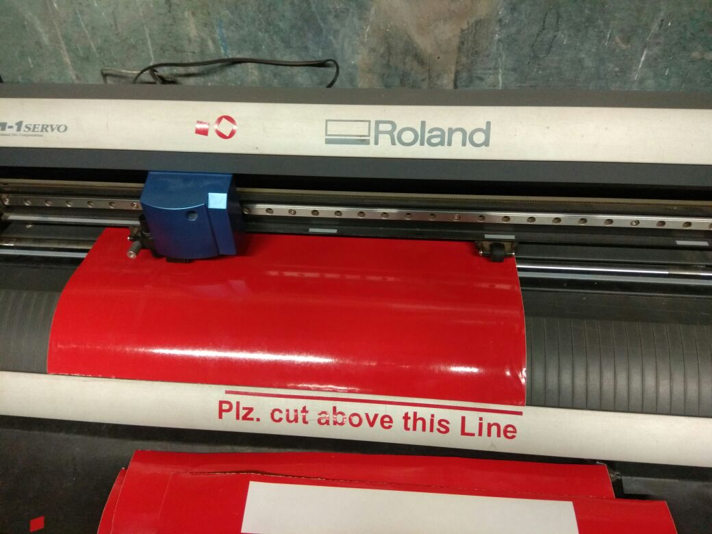
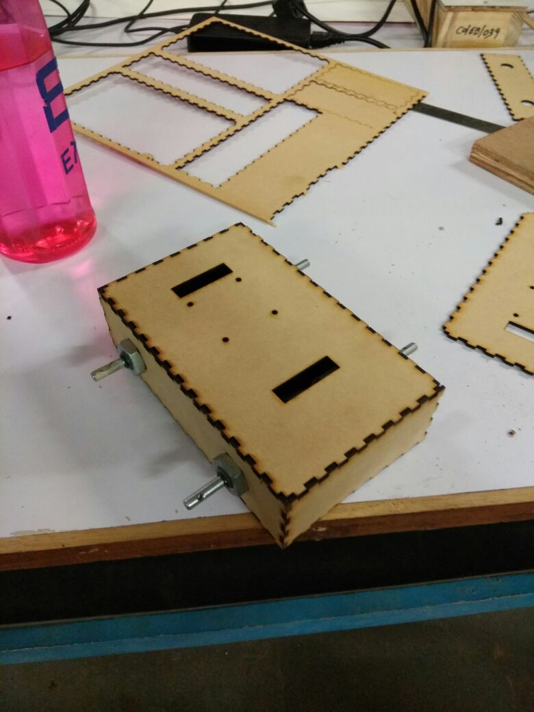
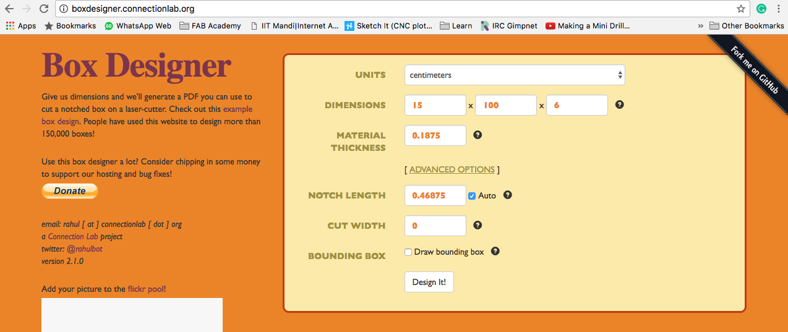
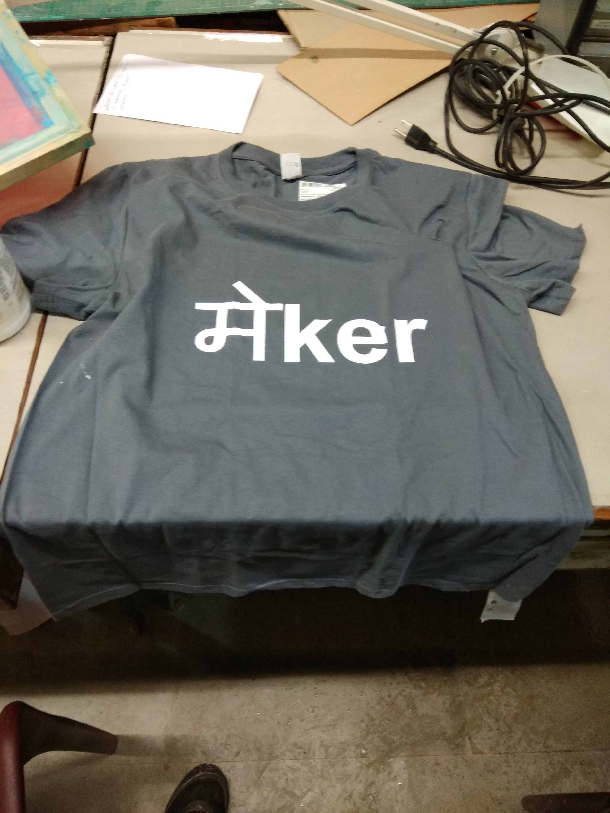

Tools Used
- Rhino ( 2D & 3d Design)
- Rhino Wip ( Parametric Design)
- Rhino Wip ( Parametric Design) | 200 mb
- Cut Studio (Vinyl Cutting)
Rhino WIP (Grasshopper)
Rhino WIP ( Grasshopper) is used for design which is having co relation setup. We can design a conenction with its value so it automatically change on refrance to other. You can go through tutorial of Rhino Grasshopper.In Mac you need to Download Rhino WIP from https://www.rhino3d.com/download/rhino-for-mac/5.0/wip You need Licence to run.

Taking a Point and than setting connection and commands

You can set formula and its value by connecting them to one another

Now as taking ahed you can joint to diffent values and commands with refrence and connecting them to make a final output

Different tabs and slider is available in which you can put value and start making formula.


I Have made a small circle and a wall in z axis for understanding its working.
Project Done for cutting
Vinyl Cutter (Roland)
To cut Plz. Cut Above this line as user use to cut near blade area were IR sensor are thier which can probably spoil sensor. so a Notation was needed on machice that cutting line is here.

- Loading Vinly paper roll on rollar.
- Lift up the clamp situated at back side
- Pass paper through it.
- You can only cut till White marks shown on bar just above cuting blade.
- Adjust sliding rollar to that white mark.
- Speed and pressure adjustment can be done in machine setting.
- Creating a file in Roland Cut Studio
- Simply by writing Letter of proper size you can do it.
- After setting proper size you can send as print file option to Roland
- It will start Cutting
- Pressure for blade should be 250 gram.
Casing for Gear Motor Robot ( Laser Cutting ) | Epilog

- Box can be made in Rhino or online file can be genrated.
- http://boxdesigner.connectionlab.org/ This website give best option for quick box file genarating in inch / cm
- Enter Data and genrate design open it into Rhino.

- It download in pdf file that can be opened in Rhino and edit according to your need
- I have added to Small rectangles for wires and four holes for noter driver
- Machine setting for Cutting in our Epilog Laser cutter is Speed : 5 Power : 100 Frequency : 2500 Hz
T - Shirt Printing

- Design Created in Cut Studio
- Faced problem in writing local language ( Hindi )
- I used Google Input tool in Powerpoint then i snipped that Image fro slideshow.
- inserted that image to Cut Studio
- Added english letters to it
- Cutted design to vinyl
- Setup frame got negative to that frame
- By using Colour available at lab screen Printing was done on tshirt.
- Using a wooden sheet as seprated and base for holding T-shirt.
Problem Faced
- MDF contains moisture then it hard to cut through with Epilog machine .
- While using boxdesigner.connectionlab.org Cut width is not working properly. As on increasing in number of notches it would overlap more lenght at end and would not pressfit.